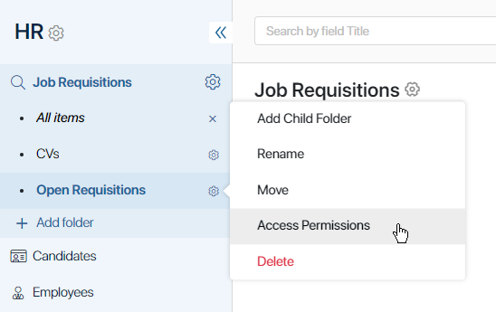
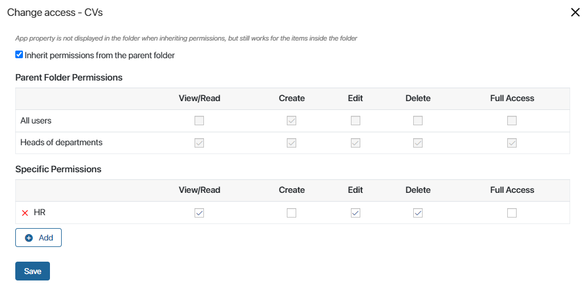
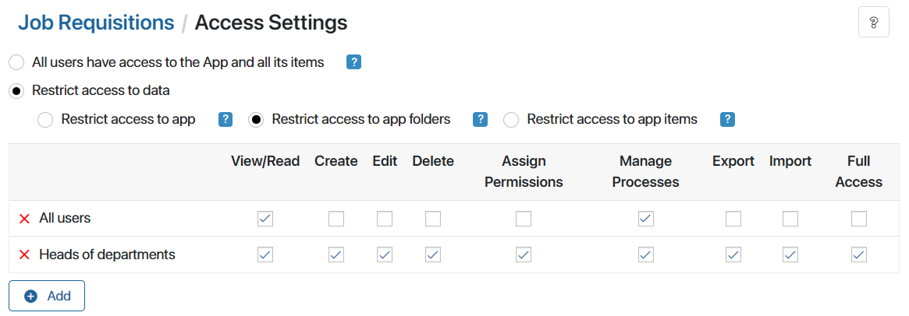
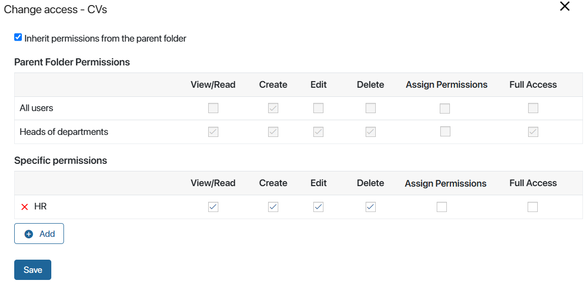
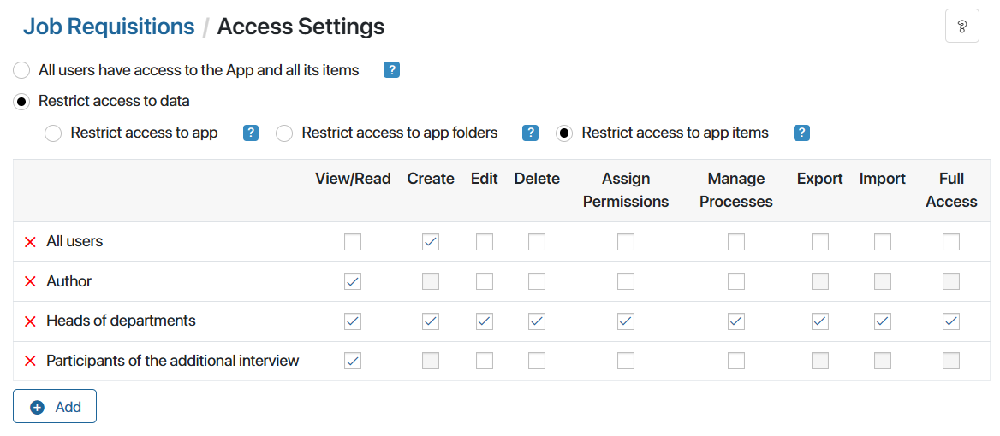

If folder hierarchy is enabled in an app, you can set different permissions for different app folders. Use this option when different employees need to have access to different folders within the app.
For example, there can be two folders in the Job Openings app: for management positions and for other positions. Only the HR department manager works with the first folder, while the second one is available to all HR employees.
начало внимание
Only users included in the Administrators group can grant and restrict permissions to folders.
конец внимание
Please note that:
- By configuring folder access restriction options, you can:
- Set up general permissions for all app folders.
- Configure access for each folder in the folder tree:
- Save the rights of users with general access and specify employees with additional rights to the folder.
- Cancel inheritance of general rights and give employees individual access to the folder.
- You can choose another option to configure access:
- Restrict access to app items. The most general option. The configured rights are applied to all app items.
- Restrict access to specific app items. The most specific restriction option. Allows assigning different permissions for certain app items individually.
- Employees who regularly work with an app should be granted access to the workspace it belongs to and to the app itself. Then they will be able to see all the data that they have access to by opening the app via the left menu.
- If some employees need one-time access to specific app items, for example, in business process tasks, they don’t need access to the workspace and app. They can open the app item page using a direct link, for example, from tasks.
Set up general permissions
To set permissions common for all folders:
- Click the gear icon to the right of the app name and select Access Settings.
- Enable the following options: Restrict access to data > Restrict access to app folders.
- Select who you want to assign permissions to. To do that, click the +Add button. This can be a user, a group, an org chart item, or the Author (the user who created the app item).
- Tick the types of access permissions that you want to grant to the specified users.
- Configure the options:
- Enable permissions inheritance based on org chart subordination. By default, managers are granted the same access rights to the app as their subordinates. To restrict access, disable the option.
- If access is denied, hide the list of users who can grant access rights. By default, an employee without access rights will see a list of users with the privilege of granting rights when trying to open the page of the app item. To hide the list, enable the option.
- Click Save.
Please note that general settings are applied to all folders in the app by default, but you can disable rights inheritance and set individual access to every folder.
Set up access to items in a folder
To set up access permissions for data in a specific folder:
- In the left menu, click the pencil icon next to the All items filter.
- A gear icon will appear next to the name of each folder. Click on it and select Access Permissions.

- In the opened window, you can configure how the general permissions set up for the app will be applied for this folder:
- Keep the folder accessible to employees with general permissions and configure additional permissions for the current folder.
For example, shared access to all folders in the app is granted to heads of departments. You need to keep it and set up additional access for a certain folder in the tree for HR employees.
To do that:
- Leave the Inherit permissions from the parent folder option enabled.
- In the Specific Permissions section, add a user, a group, or an org chart item. Specify what types of access permissions will be available to the available to the selected employees.

In this case, only selected employees will be able to work with the items in the folder. Other users with general access permissions won’t see the folder in the folder tree.
To do that, disable the Inherit permissions from the parent folder option. Then following message will appear: Do you want to add parent folder permissions as explicit permissions?
- Yes. General access rights will be displayed in the Specific Permissions section, you can change them or add more.
- No. In the Specific Permissions section, select a user, a group, or an org chart item, and configure individual rights from scratch.
- Click Save.
See an example of restricting access to app folders in the Combinations of access permissions article.
Access to child folders
By default, a child folder inherits the parent folder’s permissions. For example, let’s say that in the Contracts app you have the following folders: Procurement > Production > Spare Parts. The Spare Parts folder will inherit permissions from the Procurement and Production folders. Read more about how to disable inheritance and configure individual access for each folder.
начало примечание
Note
Let’s consider the following scenario: you’ve set up permissions for app folders but decided to restrict access to specific app items. In this case, permissions configured for each folder will still be shown in its settings. They will be applied as follows:
- Folder permissions will not be taken into account when checking a user’s permissions to app items.
- Folder permissions will determine whether the user can see the folder in the left menu.



|
конец примечание